Década de 70
Em meados de 70 a Intel apresentou seu primeiro microchip, o 4004, sendo bastante primitivo que demora 10 ciclos para processar cada instrução de 8 bits transferia seus dados através de um barramento de 4 bits e operava apenas 740 kHz. Para a época o 4004 foi um grande diferencial pois era 15 vezes mais rápido que o ENIAC, esse processador permitiu iniciar as calculadoras eletrônicas portáteis.
Figura 5: Processador Intel 4004
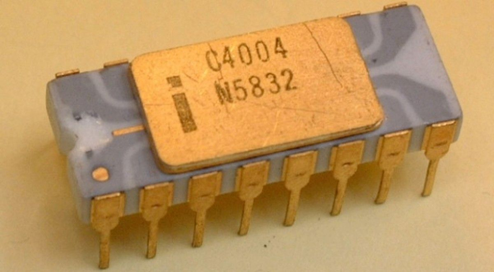Fonte: Google imagens
Passando rapidamente do 4004 a intel lançou o intel 8008, era mais rápido e suportava instruções de 16 bits que não difere só nisso mas também, em sua operação de 2 MHz e processando 500 mil instruções por segundo, o que fez com que ganhasse ainda mais seu espaço no mercado.
Figura 6: Processador intel 8008
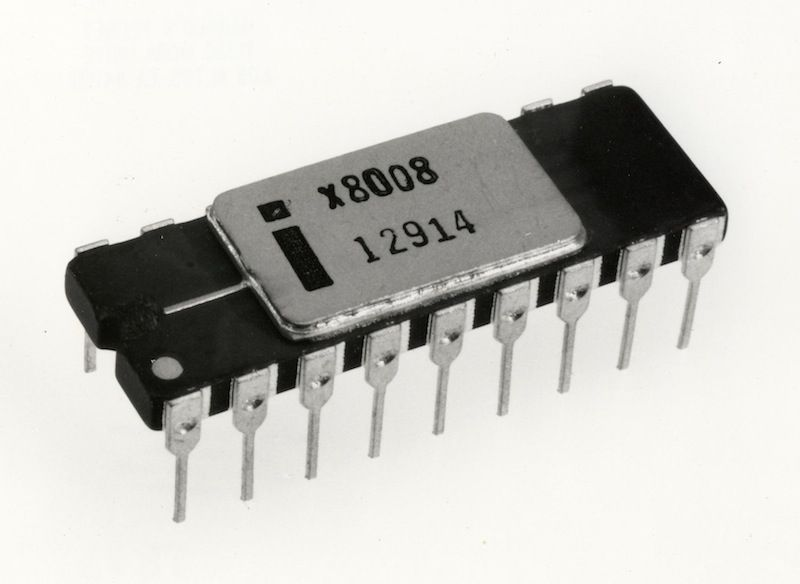Fonte: Google imagens
Passando pela década de 70, o data point 2220 teve um marco significativo com o seu monitor integrado sendo até capaz de emular outros terminais carregando várias emulação de terminal de fita, o que até então revolucionou com os computadores da década. Seguindo ele tivemos o kenbak-1, HP-9830A, dentre mais outros 64 computadores marcados em sua década. Focando no datapoint 2200, ele se destaca não apenas por seu monitor integrado mas também, a dualidade para seu processador entre a Intel e a Texas Instruments com o intuito de introduzir o primeiro microprocessador, porém, não teve utilidade no 2200 pois, foi construído com placas de circuito usando centenas de componentes discretos em vez de apenas alguns chips IC programáveis como hoje.
Figura 7: Datapoint 2200
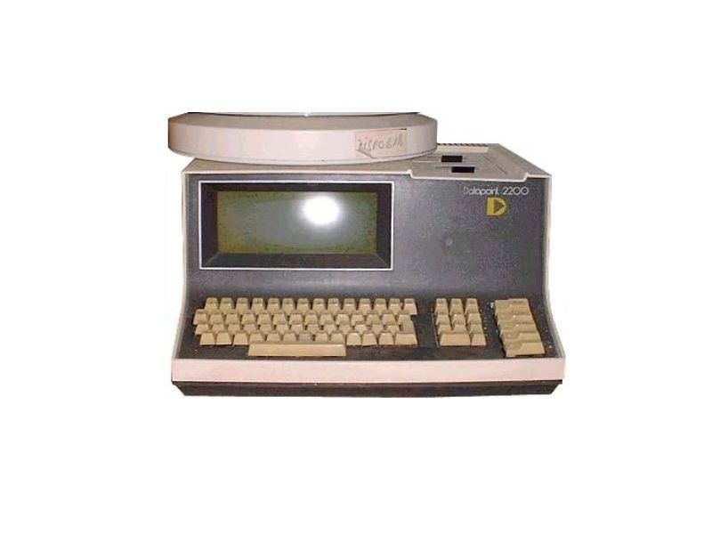Fonte: oldcomputers.net/datapoint-2200
Em 74 o processador 8080 foi desenvolvido pela Intel onde foi incrementado no mark-8, com 256 de memória RAM e considerado o primeiro a ser realmente comercializado sendo produzido entre 1000 a 2000 unidades. Grande parte dos que adquiriram o Mark-8 e que tentaram colocar o Mark-8 em funcionamento desistiram por conta da complexidade no seu manuseio e compraram alguns meses depois as primeiras versões do Altair 8800 , o primeiro computador doméstico pessoal de verdade.
Figura 8: Mark-8
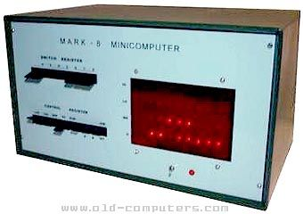Fonte: old-computers.com/museum/computer
O MITS Altair 8800 trouxe uma notável presença no mercado pois teve a essência da microinformática e foi comercializado como kit. A MITS projetou o altair simples o bastante para que um hobbysta com experiência mediana o conseguisse montar. No altair foi incrementado o processador da Intel 8080 que foi possível abrir portas para possíveis usos como calculadora científica, sistema de alarme, piloto automático, dentre outros.
Figura 9: Divulgação altair 8800
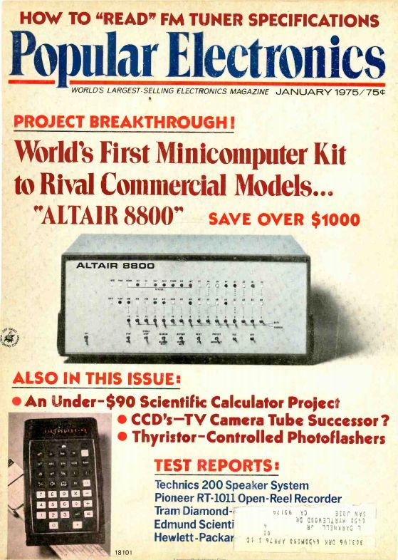Fonte: meiobit.com
Em 1976 dois nomes importantes da década sendo, Steve Jobs e Steve Wozniak que desenvolveram o micro Apple I no porão de casa. Nesse marco houve muitas dificuldades enfrentadas pela dupla principalmente financeira, o que limitou até o designer de sua máquina, que era apenas uma placa, com os componentes e conectores instalados montado em madeira.
Figura 10: apple 1
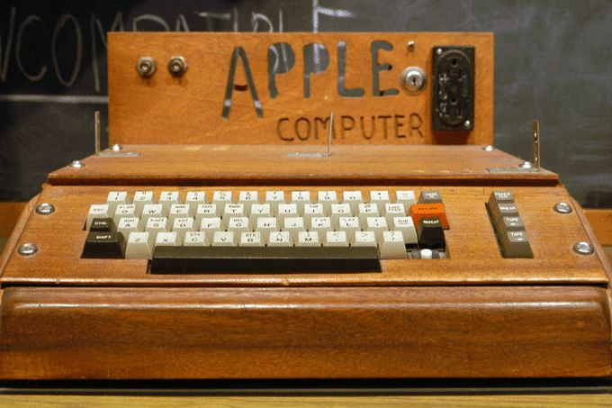Fonte: olhardigital.com.br
Em 1977 o apple 2 conquista seu lugar no mercado substituindo o apple 1, que passa a ter monitor e teclado, junto com 16 KB de memória RAM e 16 KB de memória ROM. Esse computador se revolucionou e chegou a ser vendido em torno de cinco e seis milhões dessa série, sendo comercializado até 1993 tendo diversas versões.
Figura 11: jobs e apple 2
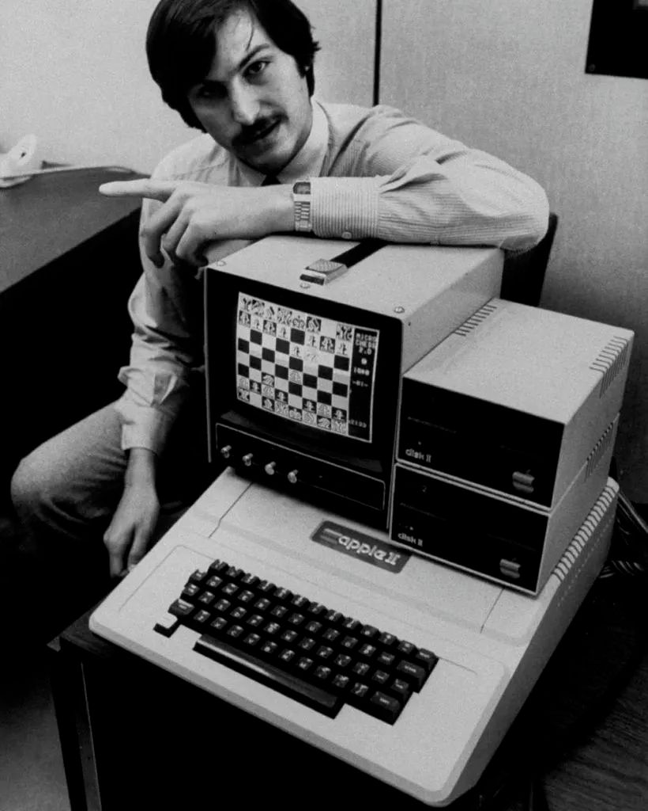Fonte: engenharia360.com
Chegando ao final da década de 70 a Intel lança o processador 8088, sucessor do 8086 do ano anterior, o que foi um microprocessador de textos, trazendo espaço para os não programadores. A utilidade desse processador teve reflexos nos dias atuais em planilhas, editores de textos e programas mais simples.
Década de 80
Em 1980 passou-se a ter a necessidade de um sistema operacional e em 81 a IBM lançou seu IBM-PC baseado no Intel 8086, correndo a 4.77 MHz e com um disquete com capacidade de armazenagem de 160 KBytes. Nesse período, os empresários passaram a visar a fabricação de computadores e que para tornar isso uma prática legal investiram em engenharia reversa.
O IBM-PC teve importância nessa década pois passou a ser o computador pessoal (PC) popular, com o uso facilitado para leigos voltado a planilhas, problemas matemáticos e financeiros e até joguinhos com a pegada do ATARI.
Figura 12: IBM-PC
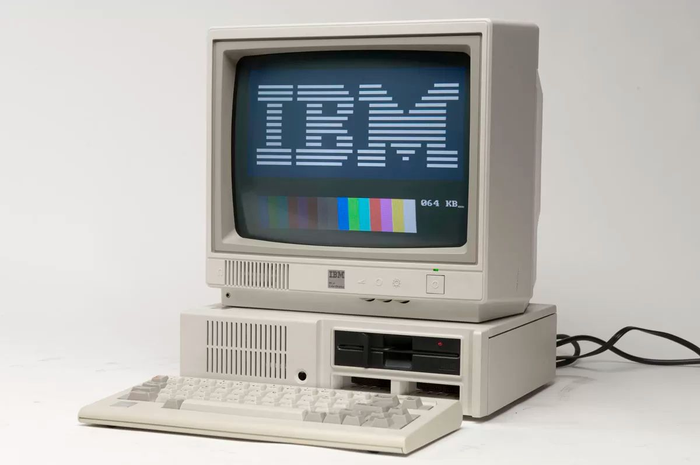Fonte: revistagalileu.globo.com
Em 1982, a Apple lançou seu computador conhecido como Lisa, que trouxe o artefato conhecido como mouse e ampliou sua capacidade de armazenamento para 260KB, trazendo o primeiro disco rígido para os microcomputadores com aproximadamente 10 MB que ficou conhecido como Winchester.
Figura 13: apple lisa
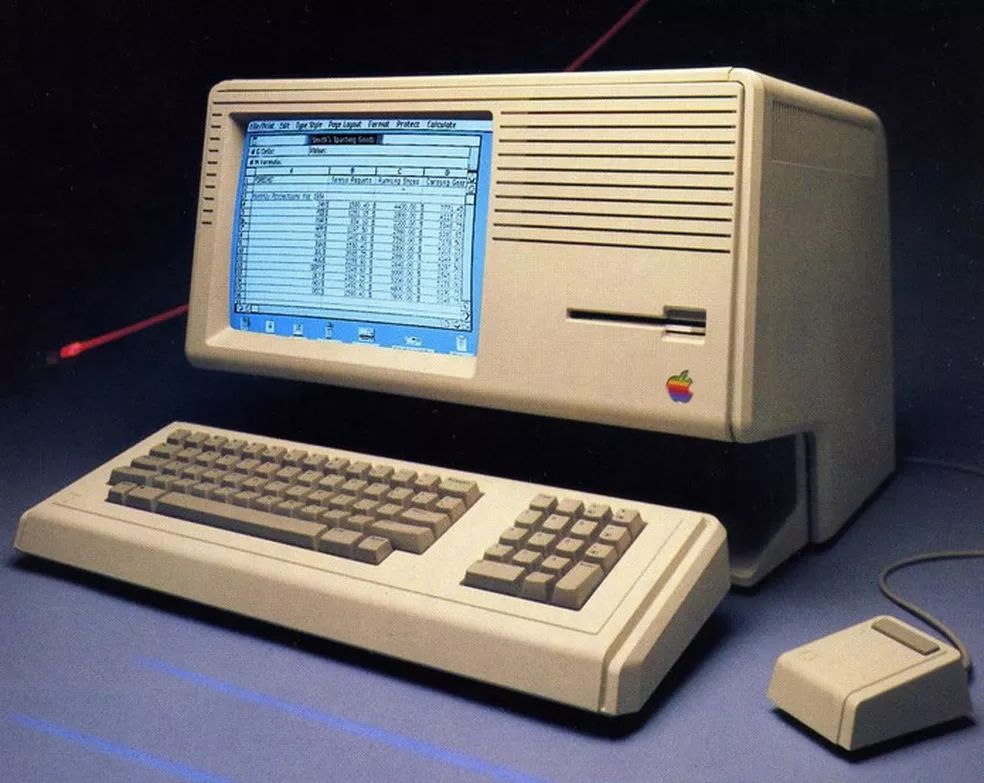Fonte: Google Imagens
Com a criação do Macintosh em 1984, Jobs apostou sua última chance em superar a IBM e lançou seu computador com a capacidade de ser transportado com mais facilidade como apresentado em seu lançamento. Macintosh apresentou um processador Motorola 68000 de 8 MHz, 128 KB de RAM, uma unidade de disquete de 3,5 polegadas além de um monitor preto e branco de 9 polegadas, um mouse, programa de processamento de textos e um kit gráfico. Tivemos a introdução de impressoras a laser que permitiram fazer impressões em papel com padrão de qualidade mais profissional.
Figura 14: macintosh
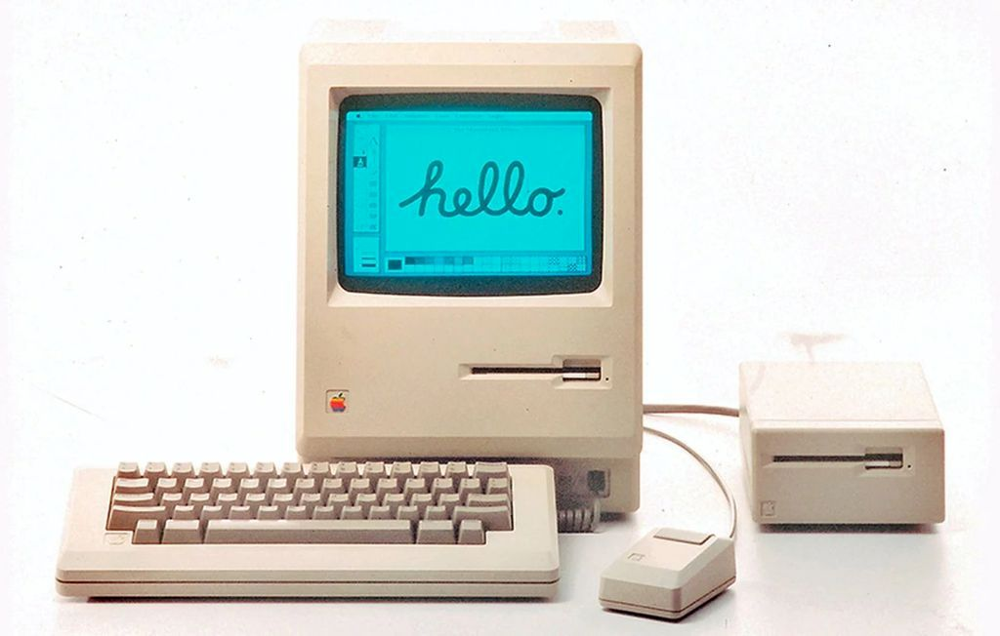Fonte: tecmundo.com.br
Em 1987 aparece o Macintosh 2, com o processador Motorola 68020 disputado na época com o Intel 80286 o sucesso de vendas e com 1 MB RAM e um disco rígido. Macintosh 2 apresenta em seu monitor as cores e a possibilidade para upgrades, diferente do seu antecessor, por mais que tivesse suas vantagens houve um atraso no mercado pois, era o dobro comparado a sua versão anterior.
Figura 15: Macintosh 2
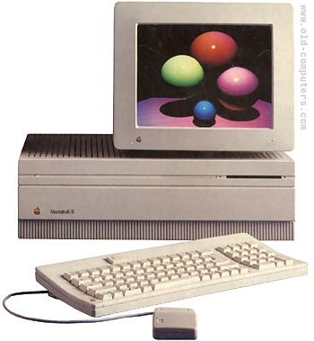Fonte: Google images
Vale pontuar o final da década de 80 com a chegada do "Worm", um programa propagável automaticamente e nocivo. Diferentemente dos "vírus", não precisa de outro programa para se propagar, esse programa chegou a infestar milhares de computadores e seu autor recebeu a punição em multa e serviços.
Década de 90
Na década de 90 fica uma disputa acirrada entre a Motorola e a Intel em relação a seus processadores sempre reforçando o desempenho e velocidade cedendo espaço para a AMD que se estende até os dias atuais.
Além de processadores fica marcado em 96 a chegada do windows 95, que teve sua mais de 4 milhões de cópias em menos de um mês e evoluindo até o windows 98 em 1999.
Ainda nessa década tem a chegada dos vírus infectando e se espalhando pelo mundo. Em 1988, havia cinco vírus conhecidos. Em 1992, já havia mais de mil.